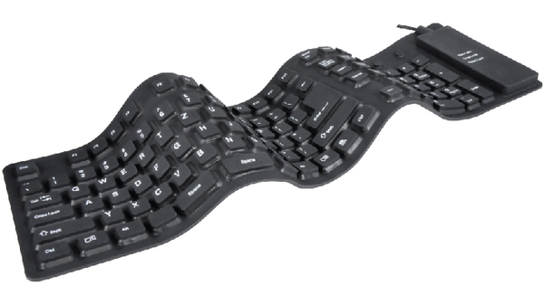
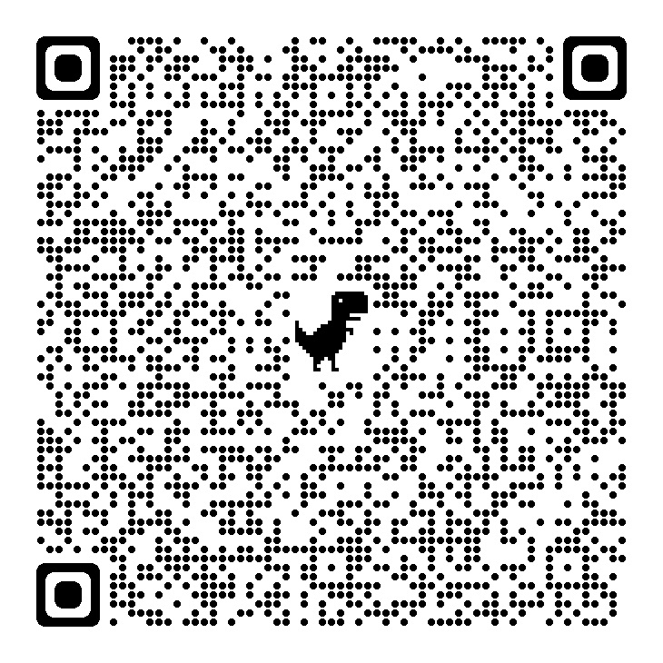
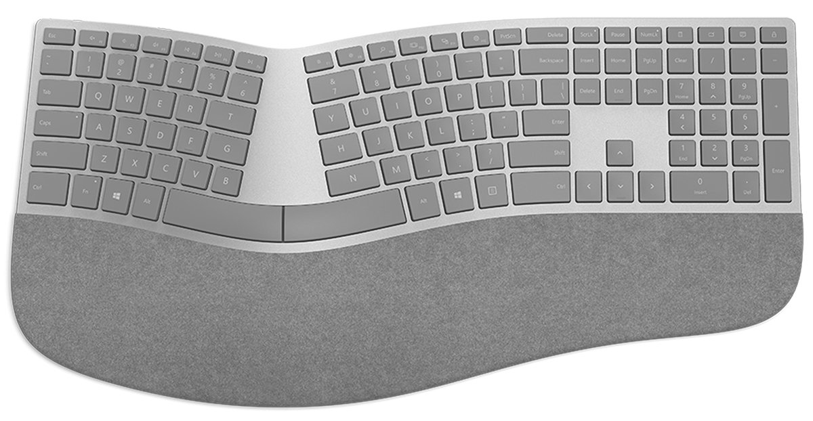
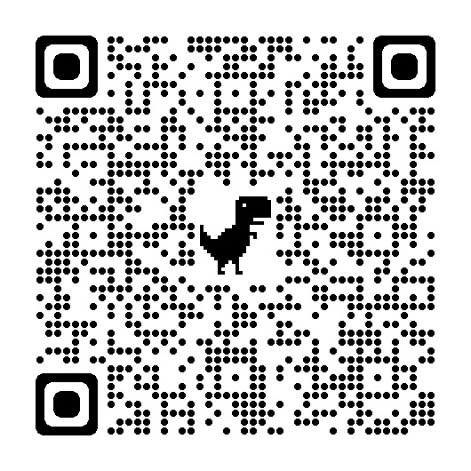
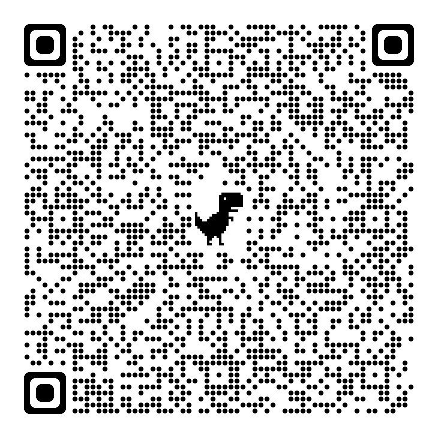
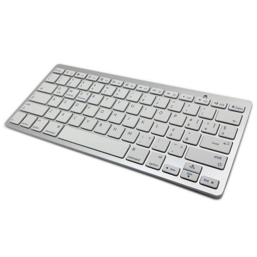
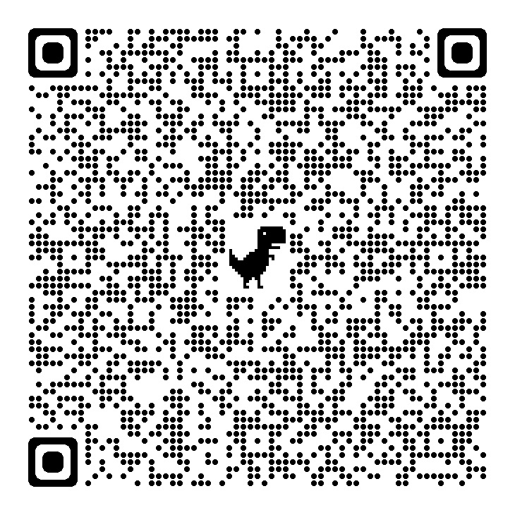
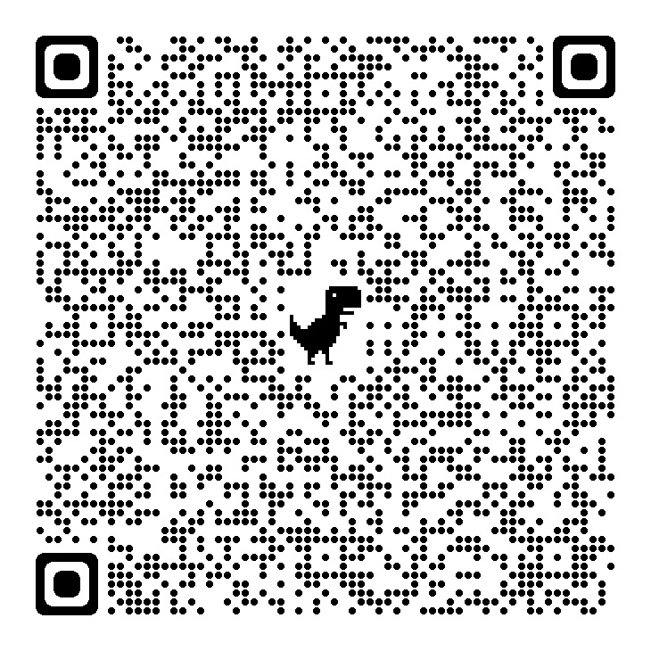
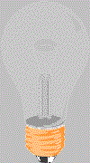

5 Different Types of Computer Keyboards Explained (with Pictures)
Most of us are used to the standard keyboards that are attached to our computers without looking for other types of computer keyboards. Without questioning what functionalities we require from our keyboards, we type away oblivious to the fact that there could be a better one out there for us.
1.flexible keyboard
From flexible keyboards, easily rolled away in our backpacks to elaborately detailed gaming keyboards, there is a multitude of options available out there; all we have to do is look. Whether you are an avid gamer or a professional designer, there is a keyboard out there for you. Have a look at this list of different keyboards to see what works best for you.These keyboards work just the same as standard keyboards but are meant for people on the move. They are typically made of silicon, which is water and dust-resistant and don’t require constant cleaning.These keyboards are ideal for those who spend a lot of time travelling and outdoors; it can be rolled up and stuffed into a bag, and it is resilient in outdoorsy situations.As the name suggests, flexible keyboards are designed to bend and flex without breaking. They contain a full arrangement of keys, though the distance between the keys is typically shorter than that of a traditional mechanical keyboard. Many users prefer flexible keyboards over their mechanical counterpart because of their inherit ability to bend and flex. So, what are flexible keyboards made of? The most common material used in their construction is silicone rubber. Silicone rubber contains the perfect balance of strength and flexibility. It’s strong enough to withstand impact, yet it’s still soft enough to bend and flex without breaking. Of course, there are other materials used to produce flexible keyboards, though silicone rubber is the most popular.As the name suggests, flexible keyboards are designed to bend and flex without breaking. They contain a full arrangement of keys, though the distance between the keys is typically shorter than that of a traditional mechanical keyboard. Many users prefer flexible keyboards over their mechanical counterpart because of their inherit ability to bend and flex. So, what are flexible keyboards made of? The most common material used in their construction is silicone rubber. Silicone rubber contains the perfect balance of strength and flexibility. It’s strong enough to withstand impact, yet it’s still soft enough to bend and flex without breaking. Of course, there are other materials used to produce flexible keyboards, though silicone rubber is the most popular.
Link for flexible keyboard on amazon
Barcode for flexible keyboard from amazon
2. Ergonomic Keyboard
An ergonomic keyboard is a keyboard that is designed to fit you (the user), rather than you having to adjust yourself to fit the keyboard. It should be designed to adjust to fit the vast majority of body types, rather than a static piece of equipment that only fits a small percentage of body types. You may ask, “well how do I know if an ergonomic keyboard is for me?” The answer is that if you use a computer, then an ergonomic keyboard is for you – it’s for everybody! The ergonomic keyboard is a tool used to input information, and using a standard keyboard for only 20 minutes per day can result in injuries. Most people have never realized they are slowly injuring themselves each day by turning their wrists inward to fit to a flat keyboard. When users turn their wrists inward and start typing, RSI’s like Carpal Tunnel Syndrome start to develop because the wrists are kept in an unnatural position throughout the entire day. Drop-in-the-box keyboards that come with laptop or desktop computer purchases aren’t developed with you in mind. They are developed to be as slim as possible and for the cheapest production cost. Goldtouch ergonomic keyboards on the other hand are designed to tent and splay to 30 degrees so each user can find their perfect angle that takes the pressure off of their wrists, forearms, and upper body.

Link for elgonomic keyboard from amazon
Barcode for ergonomic keyboard from amazon
3. Gaming Keyboard
Gaming keyboards are created for use for long periods of time, often adopting ergonomic designs for comfort and also lighted keys for playing in the night. These keyboards are also built with programmable keys that can be adapted to the kind of gamer you are. They have an extra thick coat of paint on the keys, more often used for gaming, such a W, A, S, D and the space bar.The keyboard has not seen as much advancement in terms of making it a formidable gaming device. The keyboard is mostly viewed as simply a conglomeration of over a hundred keys that are placed and configured for typing efficiently, not for navigating a character through a virtual world. There have been some modifications made to keyboards to entice a gamer, such as adding macro buttons on the perimeter of the keyboard, or having keys that glow in the dark. Still today the shape and layout of a keyboard remains the same, optimised for word processing but not gaming. Recently, certain companies have started to introduce mini-keyboards, or sub-keyboards, that are specifically designed to maximize the gaming experience. These are commonly referred to as gaming keypads.

Link for gaming keyboard from amazon
Barcode for gaming keyboard from amazon
4. Wireless Keyboard
The wireless keyboard is exactly what it’s called; a keyboard without a wire. It is connected to your computer with infrared, 2.4 GHz WiFi or more often through Bluetooth.These keyboards can be used if you connect your computer to either a screen or television so you can control it from the comfort of your bed or sofa. They are relatively inexpensive and very easily available.A wireless keyboard is a computer keyboard that allows the user to communicate with computers, tablets, or laptops with the help of radio frequency (RF), such as WiFi and Bluetooth or with infrared (IR) technology. It is common for wireless keyboards available these days to be accompanied by a wireless mouse Wireless keyboards based on infrared technology use light waves to transmit signals to other infrared-enabled devices. But, in case of radio frequency technology, a wireless keyboard communicates using signals which range from 27 MHz to up to 2.4 GHz. Most wireless keyboards today work on 2.4 GHz radio frequency.[citation needed] Bluetooth is another technology that is being widely used by wireless keyboards. These devices connect and communicate to their parent device via the bluetooth protocol. A wireless keyboard can be connected using RF technology with the help of two parts, a transmitter and a receiver. The radio transmitter is inside the wireless keyboard. The radio receiver plugs into a keyboard port or USB port. Once the receiver and transmitter are plugged in, the computer recognizes the keyboard and mouse as if they were connected via a cable.
Link for wireless keyboard from amazon
Barcode for wireless keyboard from amazon
5.Multimedia Keyboard
Both multimedia and internet keyboards are just regular keyboards with a few extra options. For multimedia designers ,the keyboards feature volume control and media application launch buttons .As for zealous internet users, they have the multimediakeys, as well as e-mail and browser launch keys to make launching apps easier and quicker.Many such keyboards also contain a volume knob, implemented as a rotary encoder so as to be able to provide relative volume changes regardless of the volume level set by the user in the operating system and application software (otherwise, the knob would need to be motorised and under computer control).

Link for multimedia keyboard from amazon
Barcode for multimedia keyboard
Following are 2 questions that can be answered
This is the element of javascript tags which can be used for keyboard lights as well
JavaScript can change HTML attribute values.
In this case JavaScript changes the value of the src (source) attribute of an image.
